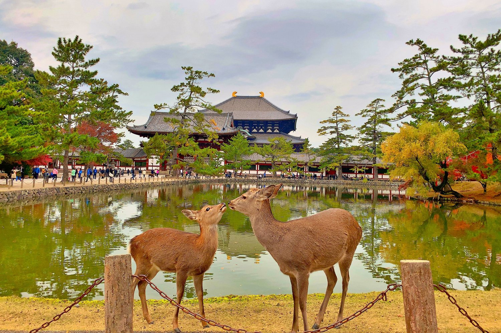
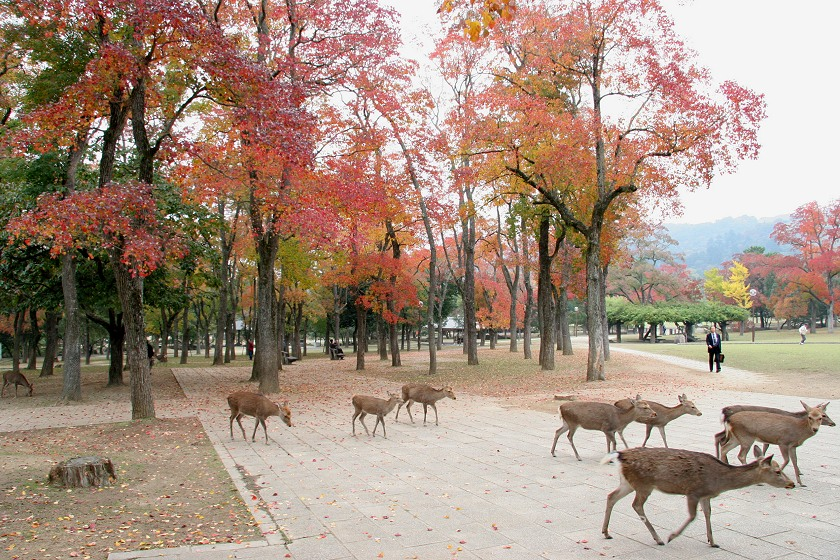

נרה, יפן |
|
|
נארה הייתה הבירה הראשונה של יפן, אבל כיום היא מפורסמת בעיקר בזכות הפארק הענק שלה, שבו מאות צביי סִיקָה מסתובבים באופן חופשי לחלוטין. הצבאים נחשבים לשליחי האלים ולמדו לקוד קידה למבקרים בתמורה לקרקרים מיוחדים. במרכז הפארק ניצב מקדש טודאי-ג'י (Todai-ji) המכיל פסל בודהה עצום מנחושת. |
  |
חזרה לדף הבית |
|